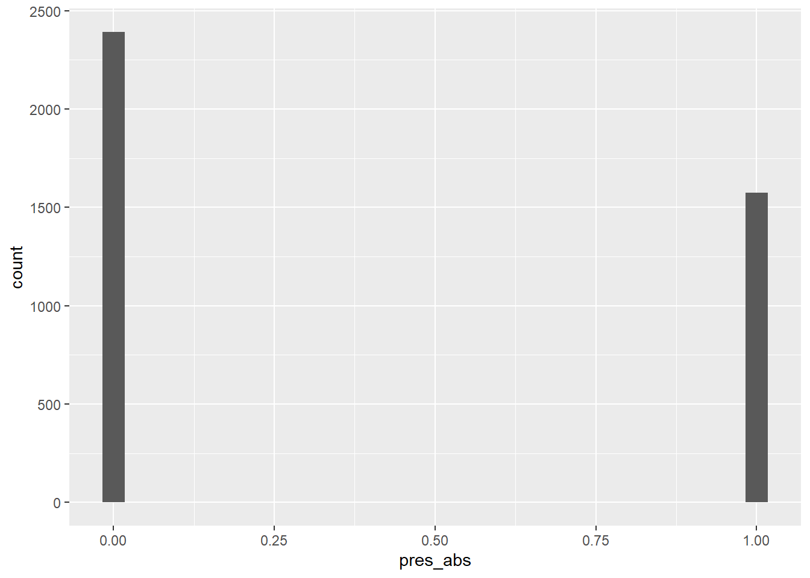

library("sf")
library("terra")
library("dplyr")
library("readr")
library("ggplot2")
library("PerformanceAnalytics")
library("pastecs")
library("lme4")
library("bbmle")
library("MuMIn")
library("MASS")5. Variablenselektion Multivariate Modelle / Habitatselektionsmodell
Libraries laden
Variablenselektion
→ Vorgehen analog Coppes u. a. (2017)
Aufgabe 1
Mit dem folgenden Code kann eine simple Korrelationsmatrix aufgebaut werden.
DF_mod <- read_delim("datasets/fallstudie_n/Aufgabe4_Datensatz_Habitatnutzung_Modelle_20221031_moodle.csv", delim = ";")
DF_mod_day <- DF_mod |>
filter(time_of_day == "day")
round(cor(DF_mod_day[, 6:12], method = "kendall"), 2)
## slope dist_road_all dist_road_only dist_build forest_prop us
## slope 1.00 0.13 0.16 0.11 0.18 0.22
## dist_road_all 0.13 1.00 0.84 0.02 -0.08 -0.06
## dist_road_only 0.16 0.84 1.00 0.03 -0.08 -0.04
## dist_build 0.11 0.02 0.03 1.00 0.42 0.12
## forest_prop 0.18 -0.08 -0.08 0.42 1.00 0.31
## us 0.22 -0.06 -0.04 0.12 0.31 1.00
## os 0.34 -0.06 -0.04 0.22 0.53 0.42
## os
## slope 0.34
## dist_road_all -0.06
## dist_road_only -0.04
## dist_build 0.22
## forest_prop 0.53
## us 0.42
## os 1.00
# hier kann die Schwelle für die Korrelation gesetzt werden, 0.7 ist liberal /
# 0.5 konservativ
cor <- round(cor(DF_mod_day[, 6:12], method = "kendall"), 2)
cor[abs(cor) < 0.7] <- 0
cor
## slope dist_road_all dist_road_only dist_build forest_prop us os
## slope 1 0.00 0.00 0 0 0 0
## dist_road_all 0 1.00 0.84 0 0 0 0
## dist_road_only 0 0.84 1.00 0 0 0 0
## dist_build 0 0.00 0.00 1 0 0 0
## forest_prop 0 0.00 0.00 0 1 0 0
## us 0 0.00 0.00 0 0 1 0
## os 0 0.00 0.00 0 0 0 1Aufgabe 2
Skalieren der Variablen, damit ihr Einfluss vergleichbar wird (Befehl scale(); Problem verschiedene Skalen der Variablen (bspw. Neigung in Grad, Distanz in Metern)); Umwandeln der Reh-ID in einen Faktor, damit dieser als Random Factor ins Model eingespiesen werden kann.
DF_mod_day <- DF_mod_day |>
mutate(
slope_scaled = scale(slope),
us_scaled = scale(us),
os_scaled = scale(os),
forest_prop_scaled = scale(forest_prop),
dist_road_all_scaled = scale(dist_road_all),
dist_road_only_scaled = scale(dist_road_only),
dist_build_scaled = scale(dist_build),
id = as.factor(id)
)Aufgabe 3
Selektion der Variablen in einem univariaten Model
Ein erstes GLMM (Generalized Linear Mixed Effects Modell) aufbauen: Funktion und Modelformel
wichtige Seite auf der man viele Hilfestellungen zu GLMM’s finden kann.
# wir werden das package lme4 mit der Funktion glmer verwenden
# die Hilfe von glmer aufrufen: ?glmer
# glmer(formula, data = , family = binomial)
# 1) formula:
# Abhängige Variable ~ Erklärende Variable + Random Factor
# In unseren Modellen kontrollieren wir für individuelle Unterschiede bei den Rehen
# indem wir einen Random Factor definieren => (1 | id)
# 2) data:
# euer Datensatz
# 3) family:
# hier binomial
# warum binomial? Verteilung Daten der Abhängigen Variable Präsenz/Absenz
ggplot(DF_mod_day, aes(pres_abs)) +
geom_histogram()
# --> Binäre Verteilung => Binomiale Verteilung mit n = 1
# und wie schaut die Verteilung der Daten der Abhängigen Variable Nutzungsintensität
# (nmb, werden wir in diesem Kurs aber nicht genauer anschauen) aus?Aufgabe 4
Mit der GLMM Formel bauen wir in einem ersten Schritt eine univariate Variablenselektion auf.
Als abhängige Variable verwenden wir die Präsenz/Absenz der Rehe in den Kreisen
# Die erklärende Variable in m1 ist die erste Variable der korrelierenden Variablen
# Die erklärende Variable in m2 ist die zweite Variable der korrelierenden Variablen
m1 <- glmer(Abhaengige_Variable ~ Erklaerende_Variable + (1 | id),
data = DF_mod_day,
family = binomial
)
m2 <- glmer(Abhaengige_Variable ~ Erklaerende_Variable + (1 | id),
data = DF_mod_day,
family = binomial
)
# mit dieser Funktion können die Modellergebnisse inspiziert werden
summary(m1)
# Mit dieser Funktion kann der Informationgehalt der beiden Modelle gegeneinander
# abgeschätzt werden
bbmle::AICtab(m1, m2)
# tieferer AIC -> besser (AIC = Akaike information criterion)
# ==> dieses Vorgehen muss nun für alle korrelierten Variablen für jeden Teildatensatz
# (Tag/Nacht) durchgeführt werden, um nur noch nicht (R < 0.7) korrelierte Variablen
# in das Modell einfliessen zu lassenCode
m1 <- glmer(pres_abs ~ dist_road_all_scaled + (1 | id), data = DF_mod_day, family = binomial)
m2 <- glmer(pres_abs ~ dist_road_only_scaled + (1 | id), data = DF_mod_day, family = binomial)
summary(m1)
## Generalized linear mixed model fit by maximum likelihood (Laplace
## Approximation) [glmerMod]
## Family: binomial ( logit )
## Formula: pres_abs ~ dist_road_all_scaled + (1 | id)
## Data: DF_mod_day
##
## AIC BIC logLik deviance df.resid
## 5290 5309 -2642 5284 4182
##
## Scaled residuals:
## Min 1Q Median 3Q Max
## -2.2094 -0.7420 -0.6013 1.0727 2.0845
##
## Random effects:
## Groups Name Variance Std.Dev.
## id (Intercept) 0.2216 0.4708
## Number of obs: 4185, groups: id, 12
##
## Fixed effects:
## Estimate Std. Error z value Pr(>|z|)
## (Intercept) -0.35871 0.14082 -2.547 0.0109 *
## dist_road_all_scaled 0.39252 0.03801 10.327 <2e-16 ***
## ---
## Signif. codes: 0 '***' 0.001 '**' 0.01 '*' 0.05 '.' 0.1 ' ' 1
##
## Correlation of Fixed Effects:
## (Intr)
## dst_rd_ll_s -0.010
bbmle::AICtab(m1, m2)
## dAIC df
## m2 0.0 3
## m1 5.3 3
# tieferer AIC -> besser (AIC = Akaike information criterion) -> als deltaAIC
# ausgewiesen besser == Distanz zu Strassen
# ==> dieses Vorgehen muss nun für alle korrelierten Variablen für jeden
# Teildatensatz (geringe Störung/starke Störung) durchgeführt werden, um nur
# noch nicht (R < 0.7) korrelierte Variablen in das Modell einfliessen zu
# lassenAufgabe 5
Selektion der Variablen in einem multivariaten Model
Mit folgendem Code kann eine automatisierte Variablenselektion (dredge-Funktion) und ein Modelaveraging aufgebaut werden (siehe auch Stats-Skript von J.Dengler & Team)
# hier wird die Formel für die dredge-Funktion vorbereitet (die Variablen V1-V6
# sind jene welche nach der univariaten Variablenselektion noch übrig bleiben)
f <- pres_abs ~
V1 +
V2 +
V3 +
V4 +
V5 +
V6
# in diesem Befehl kommt der Random-Factor (das Reh) hinzu und es wird eine Formel
# daraus gemacht
f_dredge <- paste(c(f, "+ (1 | id)"), collapse = " ") |> as.formula()
# Das Modell mit dieser Formel ausführen
m <- glmer(f_dredge, data = DF_mod_day, family = binomial, na.action = "na.fail")
# Das Modell in die dredge-Funktion einfügen (siehe auch unbedingt ?dredge)
all_m <- dredge(m)
# Importance values der einzelnen Variablen (Gibt an, wie bedeutsam eine bestimmte
# Variable ist, wenn man viele verschiedene Modelle vergleicht (multimodel inference))
sw(all_m)
# Schlussendlich wird ein Modelaverage durchgeführt (Schwellenwert für das delta-AIC = 2)
avgmodel <- model.avg(all_m, rank = "AICc", subset = delta < 2)
summary(avgmodel)
# ==> für den Nachtdatensatz muss der gleiche Prozess der Variablenselektion
# durchgespielt werden.Code
# hier wird die Formel für die dredge-Funktion vorbereitet (die Variablen V1-V6
# sind jene welche nach der univariaten Variablenselektion noch übrig bleiben)
f <- pres_abs ~
slope_scaled +
us_scaled +
os_scaled +
forest_prop_scaled +
dist_road_only_scaled +
dist_build_scaled
# inn diesem Befehl kommt der Random-Factor (das Reh) hinzu und es wird eine Formel
# daraus gemacht
f_dredge <- paste(c(f, "+ (1 | id)"), collapse = " ") |> as.formula()
# Das Modell mit dieser Formel ausführen
m <- glmer(f_dredge, data = DF_mod_day, family = binomial, na.action = "na.fail")
# Das Modell in die dredge-Funktion einfügen (siehe auch unbedingt ?dredge)
all_m <- dredge(m)
# Importance values der einzelnen Variablen (Gibt an, wie bedeutsam eine bestimmte
# Variable ist, wenn man viele verschiedene Modelle vergleicht (multimodel inference))
sw(all_m)
## dist_road_only_scaled forest_prop_scaled us_scaled
## Sum of weights: 1.00 1.00 1.00
## N containing models: 32 32 32
## slope_scaled dist_build_scaled os_scaled
## Sum of weights: 0.95 0.67 0.39
## N containing models: 32 32 32
# Schlussendlich wird ein Modelaverage durchgeführt (Schwellenwert für das delta-AIC = 2)
avgmodel <- model.avg(all_m, rank = "AICc", subset = delta < 2)
summary(avgmodel)
##
## Call:
## model.avg(object = get.models(object = all_m, subset = delta <
## 2), rank = "AICc")
##
## Component model call:
## glmer(formula = pres_abs ~ <3 unique rhs>, data = DF_mod_day, family =
## binomial, na.action = na.fail)
##
## Component models:
## df logLik AICc delta weight
## 12356 7 -2337.01 4688.05 0.00 0.48
## 123456 8 -2336.48 4689.00 0.95 0.30
## 2356 6 -2338.78 4689.58 1.53 0.22
##
## Term codes:
## dist_build_scaled dist_road_only_scaled forest_prop_scaled
## 1 2 3
## os_scaled slope_scaled us_scaled
## 4 5 6
##
## Model-averaged coefficients:
## (full average)
## Estimate Std. Error Adjusted SE z value Pr(>|z|)
## (Intercept) -0.49074 0.14774 0.14779 3.321 0.000898 ***
## dist_build_scaled -0.07877 0.06433 0.06434 1.224 0.220857
## dist_road_only_scaled 0.44281 0.04792 0.04793 9.239 < 2e-16 ***
## forest_prop_scaled 0.83786 0.06487 0.06489 12.912 < 2e-16 ***
## slope_scaled -0.13548 0.04973 0.04975 2.723 0.006463 **
## us_scaled 0.40130 0.04101 0.04102 9.784 < 2e-16 ***
## os_scaled 0.01926 0.04529 0.04530 0.425 0.670605
##
## (conditional average)
## Estimate Std. Error Adjusted SE z value Pr(>|z|)
## (Intercept) -0.49074 0.14774 0.14779 3.321 0.000898 ***
## dist_build_scaled -0.10139 0.05508 0.05510 1.840 0.065756 .
## dist_road_only_scaled 0.44281 0.04792 0.04793 9.239 < 2e-16 ***
## forest_prop_scaled 0.83786 0.06487 0.06489 12.912 < 2e-16 ***
## slope_scaled -0.13548 0.04973 0.04975 2.723 0.006463 **
## us_scaled 0.40130 0.04101 0.04102 9.784 < 2e-16 ***
## os_scaled 0.06466 0.06284 0.06286 1.029 0.303636
## ---
## Signif. codes: 0 '***' 0.001 '**' 0.01 '*' 0.05 '.' 0.1 ' ' 1